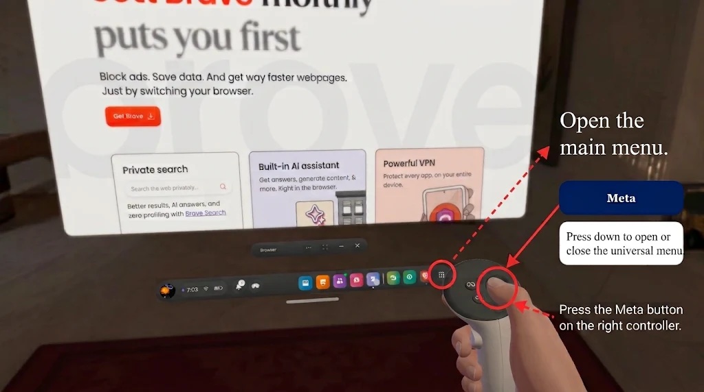
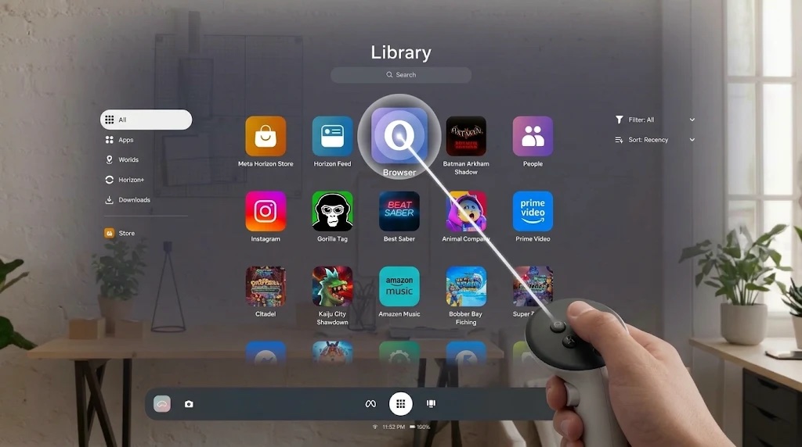
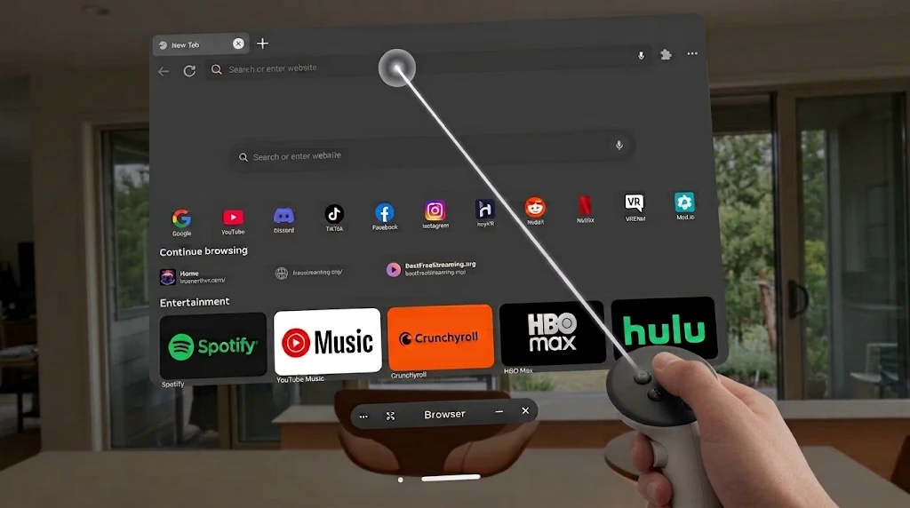

Step 1
Open the main menu
Press the Meta button on the right controller to open the main menu.

The browser lets you open websites inside the headset. You can use it to view a lesson page, video, image, or web activity.
Step 1
Press the Meta button on the right controller to open the main menu.

Step 2
Select Library or Apps. The name may look different after a system update.

The browser opens in a window in front of you.
Step 4
Point at the box near the top of the browser. Press the trigger.

Use the keyboard that appears. Select Enter to open the website.